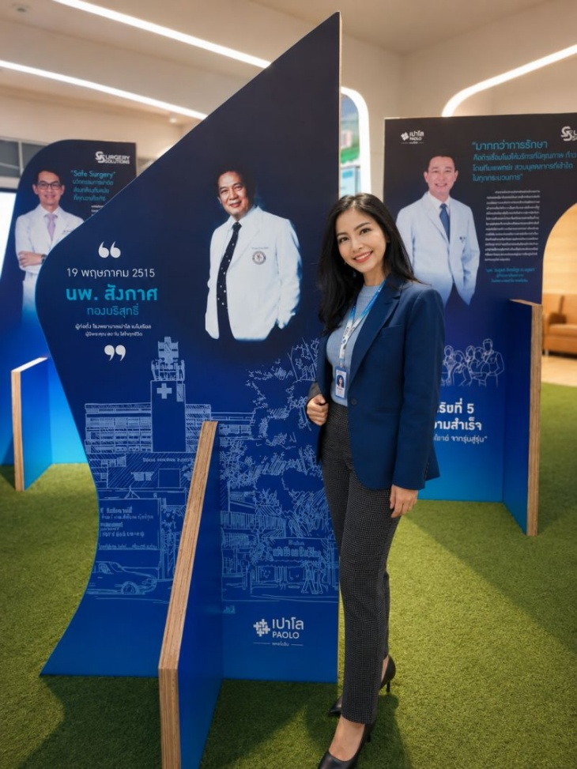
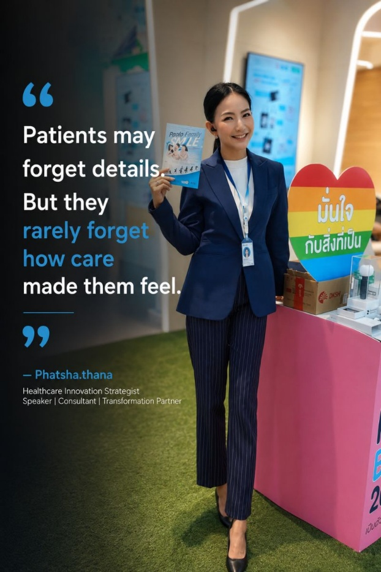

Healthcare Innovation & Service Context
Grounding strategy in the realities of healthcare delivery, stakeholder expectations, and human experience.
PROJECT 01
Turning healthcare and wellness ideas into practical, accessible, and sustainable services.
THE EXPERIENCE BEHIND THE WORK
Experience across healthcare business development, wellness services, digital partnerships, and transformation has shown that value must be translated into services people can understand and access—and that organisations can continue to operate sustainably. Quality transformation connects people, systems, and business goals rather than simply adding technology to an existing process.

Grounding strategy in the realities of healthcare delivery, stakeholder expectations, and human experience.
Listening, aligning, and helping people move forward together.
Connecting collaboration, service design, and digital capability to support practical growth.

Ensuring that systems and services remain understandable, accessible, and meaningful to people.